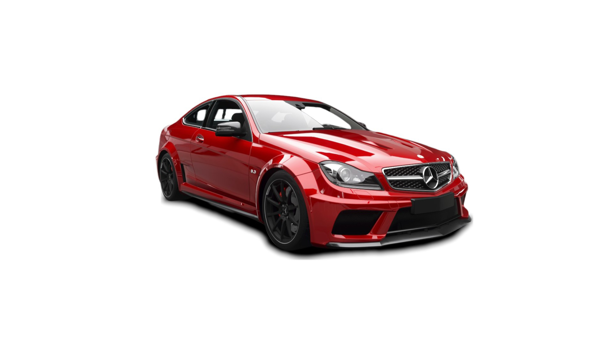
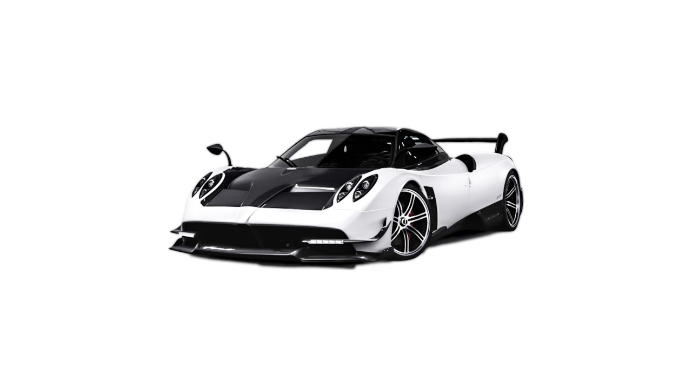

Destaques da semana
OS mais comprados e alugados da semana

Até 500 mil
Mercedes C63
Um dos modelos mais icônicos e potentes da linha Classe C já produzidos em série.
Lançado globalmente por volta de 2012.

Até 10 milhões
Pagami Huarya BC
O Pagani é um carro esportivo com motor central produzido pelo fabricante italiano de carros esportivos Pagani. Seu lançamento ocorreu em 2011. Este modelo é o substituto do lendário Zonda que deu muito sucesso para a Pagani.